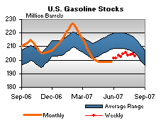

Released on August 8, 2007
(Next Release on August 15, 2007)
Trends
Much has happened in the last week in Major League Baseball. Not only did Barry Bonds hit his 756th home run last night, but this past Sunday, Tom Glavine became the 23rd player to win 300 games, while just a day before that, Alex Rodriguez was the 22nd player to reach the 500 career home run milestone. While baseball analysts see many other players on their way to hitting 500 home runs during their careers, some wonder if Tom Glavine will be the last pitcher to win 300 games. Thus, contrary to today’s count of players reaching each milestone, the trends suggest that 300 or more wins will ultimately prove to be a rarer achievement than 500 or more home runs. In oil markets as well as in baseball, examination of trends can provide a different perspective than is suggested by the current data alone.
In looking at U.S. crude oil inventories (excluding those in the Strategic Petroleum Reserve), analysts are watching not just the absolute level, but also the trend. Data released earlier today indicate that as of August 3, U.S. crude oil inventories stand at 340.4 million barrels, well above the average range, and 34 million barrels above the five-year average. This would seem to indicate a market flush with crude oil. Yet, keen analysts are note that U.S. crude oil inventories fell by nearly 11 million barrels in the last two weeks. Despite a drop last week, crude oil inputs to refineries during the last two weeks refinery has averaged 16.0 million barrels per day. At this rate and with domestic crude oil production averaging about 5.2 million barrels per day over the last two weeks, it would take 10.8 million barrels per day of imported crude oil to keep crude oil inventories from falling. While this is a weekly import level attained 3 times so far in 2007, it is hardly an average or expected level. Should crude oil imports continue to average about 10.1 million barrels, as they have the last two weeks, while runs are maintained at their recent level, crude oil inventories would fall by an average of about 5 million barrels each week, putting inventories back within the average range by the end of this month.
Yesterday, EIA released its latest Short-Term Energy Outlook, which again highlighted a continuing tight global oil market. While some analysts will note changes between this edition and last month’s projections, if they instead look over the last several editions they will find a consistent story. EIA’s projections have continued to point to a tightening global crude oil market over the second half of 2007. In looking ahead, based on the trends observed, EIA has consistently projected a decline in inventories relative to their average pattern over the second half of 2007 and into 2008, and this projection continues in this month’s outlook. Analysts could focus on the forecast for oil prices and make much ado about whether the price is averaging over $70 per barrel for much of the forecast (as it does in this month’s forecast) or if the forecast calls for prices declining to below $70 per barrel (as it has been projected in some other recent editions). But what may be more useful for those wanting to understand EIA’s expectations for the global oil market over the short-term is the consistent story of declining inventories, relative to their expected pattern for 2007 and 2008, and thus a tight market.
Analysts, whether baseball analysts or oil market analysts, can learn a lot of information by observing not only the current period’s numbers, but also the trends within the numbers.
Gasoline Price Falls While Diesel Increases
The U.S. average retail price for regular gasoline dropped 3.8 cents last week to dip to 283.8 cents per gallon as of August 6, 2007, 20.0 cents lower than last year. Prices fell for the third week in a row, reaching the lowest national average price since April 9, 2007. All regions recorded price declines. East Coast prices fell 4.9 cents to 282.1 cents per gallon. Midwest region prices decreased 2.0 cents this week to 282.8 cents per gallon. Prices for the Gulf Coast were 4.4 cents less, settling at 274.8 cents per gallon, the lowest in the country. In the Rocky Mountain region, prices were 294.5 cents per gallon, down 3.9 cents this week and 5.1 cents per gallon below last year. West Coast prices, highest in the Nation, decreased 4.2 cents to 295.5 cents per gallon. The average price for regular grade in California was 4.4 cents lower at 301.6 cents per gallon.
Continuing the fluctuating trend, retail diesel prices were higher at 289.8 cents per gallon, 1.2 cents over last week. Prices are 15.7 cents per gallon lower than at this time last year. All regional prices rose, with East Coast prices growing by 1.9 cents to 286.6 cents per gallon. In the Midwest, prices rose 0.2 cent to 288.7 cents per gallon, while the Gulf Coast increased 1.6 cents to 282.4 cents per gallon. The Rocky Mountain region gained 0.9 cent, to settle at 301.2 cents per gallon. The West Coast price was up by 1.9 cents to 307.7 cents per gallon. California prices fell by 1.2 cents, to 314.0 cents per gallon, 1.0 cent per gallon higher than at this time last year.
Propane Reports Weak Build
Propane stockholders reported a weekly build of just 0.4 million barrels last week, a level that continues to reflect the recent slowdown in imports that are typically much higher this time of year. As of August 3, primary propane inventories stood at an estimated 50.4 million barrels, a level below the low end of the average range for this time of year. The Gulf Coast region reported an increase last week that totaled 1.3 million barrels, while the Midwest region reported a weekly decline of 0.9 million barrels. Inventories in the East Coast and the combined Rocky Mountain/West Coast regions remained relatively flat during this same time. Propylene non-fuel use inventories rose by 0.2 million barrels last week to account for a higher 5.9 percent of total propane/propylene inventories compared with the prior week’s 5.5 percent share.
Text from the previous editions of “This Week In Petroleum” is now accessible through a link at the top right-hand corner of this page.
| Retail Prices (Cents Per Gallon) | |||||||
| Retail Data | Changes From | Retail Data | Changes From | ||||
| 08/06/07 | Week | Year | 08/06/07 | Week | Year | ||
| Gasoline | 283.8 | Diesel Fuel | 289.8 | ||||
| Spot Prices (Cents Per Gallon) | |||||||||||||||||||||||||||||||||||||||
|
|||||||||||||||||||||||||||||||||||||||
| Stocks (Million Barrels) | |||||||
|  | |||||||
| Stocks Data | Changes From | Stocks Data | Changes From | ||||
| 08/03/07 | Week | Year | 08/03/07 | Week | Year | ||
| Crude Oil | 340.4 | Distillate | 127.5 | ||||
| Gasoline | 203.0 | Propane | 50.354 | ||||